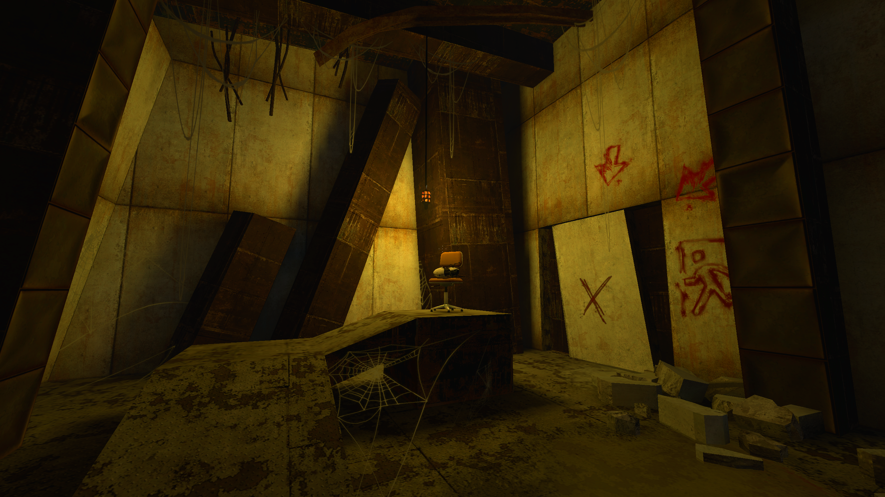
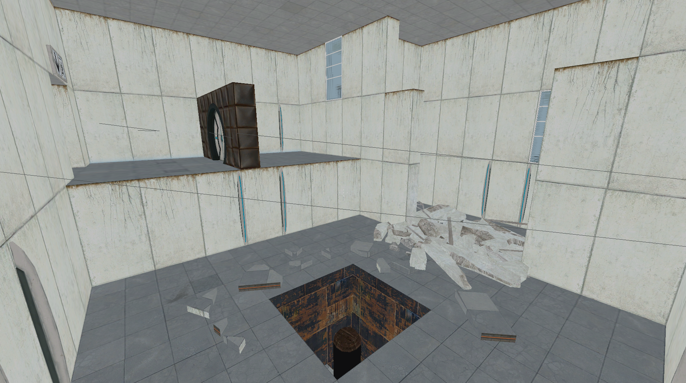

Corehub
Members examined Corehub rooms, sequences and unusual early interactions in this build.
PSBR ↗ · community discussion, not an official build changelog
Early Portal 2 prototype centered on the Corehub environment. The PSBR exports document surviving F-STOP material alongside this stage of development.
Members examined Corehub rooms, sequences and unusual early interactions in this build.
PSBR ↗ · community discussion, not an official build changelog
The July 2009 files include F-STOP remnants; PSBR separately explains why this does not constitute a playable leaked F-STOP build.
PSBR ↗ · community discussion, not an official build changelog
Discussion compares p2_lab_start variants and previously used chambers in the prototype maps.
PSBR ↗ · community discussion, not an official build changelog
This era follows Mel, who collects personality cores through multiple test tracks rather than tracing retail Portal 2's Chell-and-Wheatley campaign.
The build demonstrates a slow-field device, hover turrets and extensive reused or ruined original Portal environments.
The July 2009 content includes leftovers associated with Valve's F-STOP and experimental development work.
CoreHub also contains early cooperative material that evolved differently from the retail co-op hub.
The observations here are tied to PSBR and VCC discussion records and contemporary footage. For exact depot metadata, compare the dated Hidden Palace prototype entry ↗. Where video footage uses a patched build or a different revision, the label below identifies the difference.
Images below are direct references from the supplied Discord exports, not generated artwork. Signed Discord media links can expire; use the source-message links if a preview stops loading.
SECONDARY VISUAL RESEARCH: THE CUTTING ROOM FLOOR · BUILD ANALYSIS / SCREENSHOTS ↗ · HIDDEN PALACE · VERIFIED DEPOT RECORD ↗

